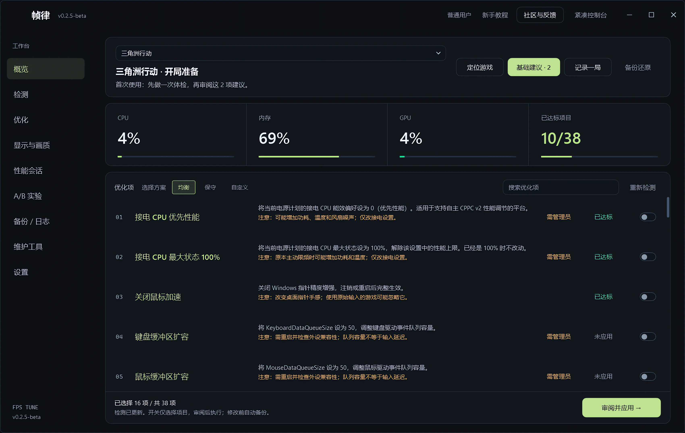

跳到项目
jk
.
记得开心一点
项目
能力
关于
亮色
外观
雕塑版
亮色
暗色
蓝图
实作档案
切换全新风格
↗
GitHub
MAKE
IT REAL.
IT REAL.
想法，正在成形。
WINDOWS / AI / OPEN SOURCE
IDEA → SYSTEM → REALITY
把好奇心，画成可用的结构。

FPS 帧律
一个想法，已经可以用了。
把想法
做成有用的东西。
我是「记得开心一点」。
保持好奇，也把事情做完。
直接看作品
LIQUID IDEA
暂停自转
01
聚合
02
成形
03
连接
04
落地
SELECTED WORK
从「能不能」
到「用得上」。
全部作品
Windows 工具
AI 工作流
界面与体验
更多作品与开源实践
PROJECT NOTES
复制作品链接
关闭 ×